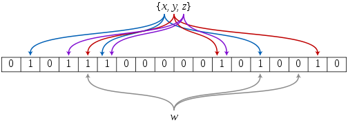

位图
在哈希表中，如果要在表中存放一个整数，此时就要申请一个整型的内存来存放它，一个整型数据在32位或64位平台下都占4个字节。如果现在需要存储的数据非常多，比如说40亿个不重复的数据，就需要160亿个字节来存储，1GB的内存表示的是10亿个字节，此时就需要16GB的内存来存放这些数据，而我们普通的电脑内存一般都是4G的内存，这显然是存放不下的。我们知道，内存中的最小单位是比特位。如果能用一个比特位来存放一个整型，只需要0.5GB的内存。一个比特位可以表示一个0或1。如果要表示40亿个数据，可以申请0.5GB的内存。如果要存放的数据为10，就将第10个比特位设置为1。如果要查找的数据为100，就查看第100个比特位处的状态，如果为1说明，100存在于这堆数据中，如果为0说明不存在
位图的应用：
- 快速查找某个数据是否在一个集合中
- 排序
- 求两个集合的交集、并集等
- 操作系统中磁盘块标记、内核O(1)调度算法
模拟实现：
1 | // bitset.hpp |
应用：
- 给定100亿个整数，设计算法找到只出现一次的整数？
100亿个整数，一个整数占4个字节，总共需要400亿字节。1GB = 10亿字节，所以需要40GB的内存。因此不能直接将数据加载到内存中
对于任意的整数，可以分三个状态进行讨论：没有出现，出现一次，出现多次。因此三个状态可以两个比特位来存放。其中：00表示没有出现的整数，01表示出现1次的整数，10表示出现两次的整数，11舍弃不用。所以可以用位图来对这些数据进行处理，此时内存占用就可以减少为1GB
实现思路如下： 首先在内存中创建一个1GB的位图，初始化时全部设置为0。然后遍历100亿个整数，遇到一个整数，将该整数的2倍处的连续两个比特位先设置为01，当遇到两次或两次以上的情形时，将这两个比特位设置为01即可。遍历完所有整数后，对位图的设置就结束了
然后，从头开始遍历位图，一次提取两个比特位，如果这两个比特位对应的数字为01，说明这两个比特位对应的数字只出现了一次。遍历完整个位图之后，就找到了所有只出现一次的数字 - 给两个文件，分别有100亿个整数，我们只有1G内存，如何找到两个文件交集？
方案1：将其中一个文件的整数位置映射到一个位图，读取第二个文件判断是否在位图中。500M内存
方案2：将文件1的整数映射到位图1中，将文件2的整数映射到位图2中，然后两个位图按位与得到交集。1G内存
布隆过滤器
新闻客户端推荐系统如何实现推送去重的？ 用服务器记录了用户看过的所有历史记录，当推荐系统推荐新闻时会从每个用户的历史记录里进行筛选，过滤掉那些已经存在的记录。如何快速查找呢？
用哈希表存储用户记录，缺点：浪费空间
用位图存储用户记录，缺点：不能处理哈希冲突
将哈希与位图结合，即布隆过滤器
可以用位图加上多个字符串哈希函数的方法来实现布隆过滤器。字符串哈希函数越多，一个字符串对应的下标值也就越多，冲突的概率就会越小
可以用来告诉你 “某样东西一定不存在或者可能存在”

1 |
|
注意：在对布隆过滤器的基本操作中，没有删除某一字符串的操作。因为一个字符串对应多个下标处的状态，一个下标处的状态也可能被多个字符串使用。所以，一旦将一个字符串删除，就会将该字符串对应的多个下标处的1均置为0，此时就会影响其他的字符串。因此不能对布隆过滤器进行删除操作。改进支持删除的方法：将布隆过滤器中的每个比特位扩展成一个小的计数器，插入元素时给k个计数器(k个哈希函数计算出的哈希地址)加一，删除元素时，给k个计数器减一，通过多占用几倍存储空间的代价来增加删除操作
缺点：
- 有误判率不能准确判断元素是否在集合中(补救方法：再建立一个白 名单，存储可能会误判的数据)
- 不能获取元素本身
- 一般情况下不能从布隆过滤器中删除元素，如果采用计数方式删除，可能会存在计数回绕问题
优点：
- 时间复杂度为O(K) (K为哈希函数的个数，一般比较小)，与数据量大小无关
- 哈希函数相互之间没有关系，方便硬件并行运算
- 不能获取元素本身，在某些对保密要求比较严格的场合有很大优势
- 在能够承受一定的误判时，布隆过滤器比其他数据结构有这很大的空间优势
- 使用同一组散列函数的布隆过滤器可以进行交、并、差运算
应用：
- 给两个文件，分别有100亿个query，我们只有1G内存，如何找到两个文件交集？分别给出精确算法和近似算法
近似算法：将文件1的query映射到一个布隆过滤器中，读取文件2中的query，判断在不在布隆过滤器中，在就是交集。缺陷：判断出来的交集中的数不准确，但是不会遗漏数据
精准算法：哈希切分，将文件A和文件B都分为1000个小文件，i=hashstr(query)%1000得到的i是多少就将query放入对应的A(i)或B(i)中，然后将A(i)数据放入set中，查找B(i)看是否在交集中 - 给一个超过100G大小的log file, log中存着IP地址, 设计算法找到top K的IP？如何直接用Linux系统命令实现？
先创建1000个小文件A0~A999，读取IP计算i=hashstr(ip)%1000，i是多少IP就进入对应编号Ai小文件，这样相同IP一定进入同一小文件，利用map<string, int>统计ip出现的次数，用一个大小为k的小顶堆即可